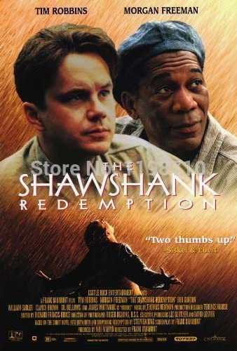
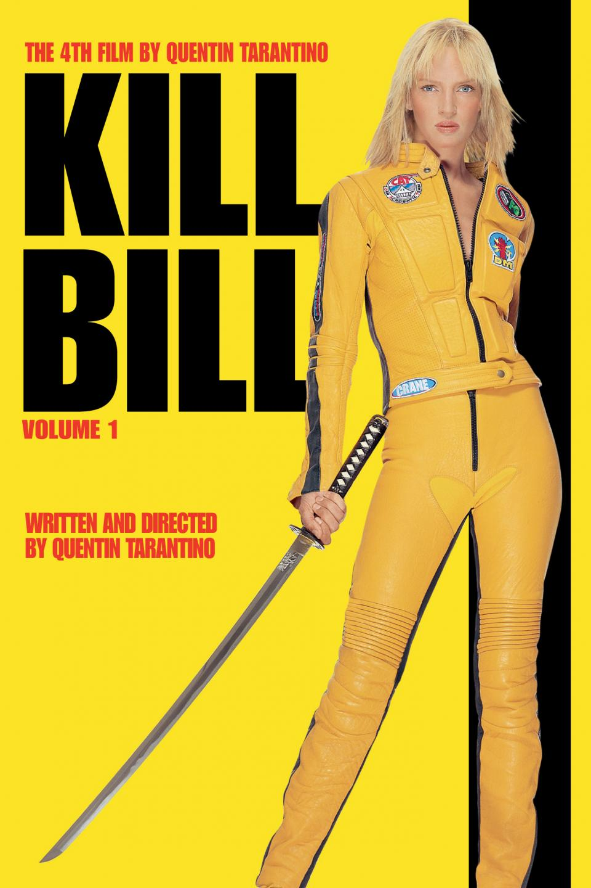
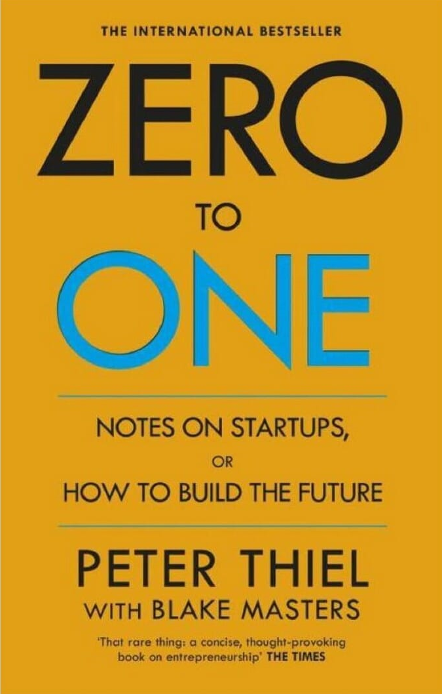
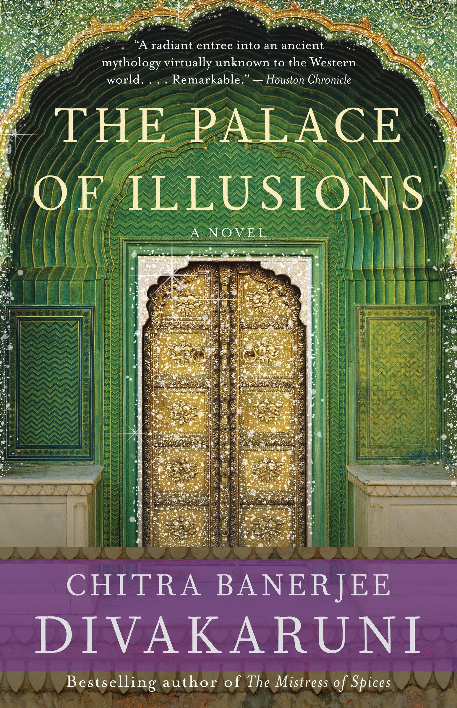

I love to code and solve problems on leetcode in my free time because not only do i love coding, it is also a good mental exercise
and helps to practice algorithmic thinking besides helping in technical interview preparation. However, often it can get very exhausting
very-very quickly. And then comes, similar to most people in our generation, my reliance on music, books, tv shows, movies or even
random coding marathon tutorials on YouTube - where tech stacks are attempted to be taught in a single video.
Here are some of my favourite music, movies, tv shows and books which i recommend everyone around me to experience,
not only to share common interests but also for the brilliance of what they express to the audience.
Movies
The Shawshank Redemption

Kill Bill (volumes 1-3)

Inception
Interstellar
TV-Shows
The Office
a compilation of funny moments from the office by my favourite character in the series (Creed) - source
Friends
a compilation of funny moments from Joey from friends
Lofi Fruits (the song playing as background music to this page is their rendition of Gangsta's Paradise
The Weekend - (especially the After Dark album)
AP Dhillon - Singles from 2020-present
Hans Zimmer
Books
Zero to One - Peter Thiel

Palace Of Illusions - Chitra Banerjee

The Hunger Games - Suzane Collins
Atomic Habits - James Clear
These have made up either major parts of my childhood or are my gym jams and even my consistent rewatch binges, and the books have been very influential in my life